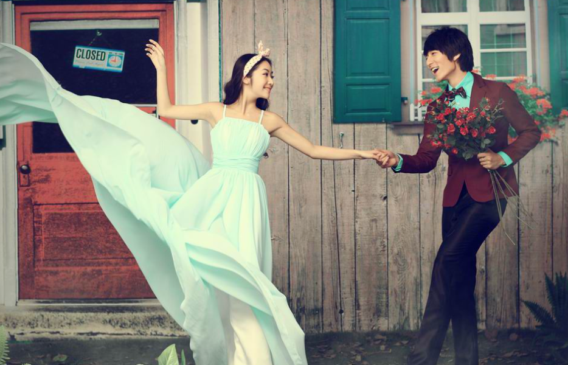

秋千小编 2015/10/26 08:35
在社交活动中和男性来往是经常的事。那么，如何把握交往之中的分寸呢?这里大有学问。男女交往的尺度一定要把握好。由于心理和生理上的原因，男性与女性在一起时，会产生轻松、愉快的感受，这种感受使异性间相互吸引，形成良好的交往关系。但男女交往还是要特别注意些事。
①不宜过分亲昵。过分亲昵不仅会使自己显得太轻佻，引起人们的反感，而且还容易造成不必要的误会，即使是已经确定关系的恋人最好不要随意流露热情和过早的亲昵；
②不宜过分冷淡。因为冷淡会伤害男方的自尊心，也会使人觉得你高傲无礼，孤芳自赏；
③不必过分拘谨。在和男性的交往中，要该说就说，该笑就笑，需要握手就握手，需要并肩就并肩，忸怩作态反而使人生厌;反之，过分随便也不好，男女毕竟有别，有些话题只能在同性之间交谈，有些玩笑不宜在异性面前开，这都是要注意的；
④不要饶舌。故意卖弄自己见多识广而哇啦哇啦讲个不停，或在争辩中强词夺理不服输，都是不讨人喜欢的;当然，也不要太沉默，老是缄口不语，或只是“噢”、“啊”，哪怕他此时面带笑，也容易使人扫兴；

⑤不可太严肃。太严肃叫人不敢接近，望而生畏;但也不可太轻薄。幽默感是讨人喜欢的，而“二百五”地故意出洋相，还自以为幽默;就适得其反了；